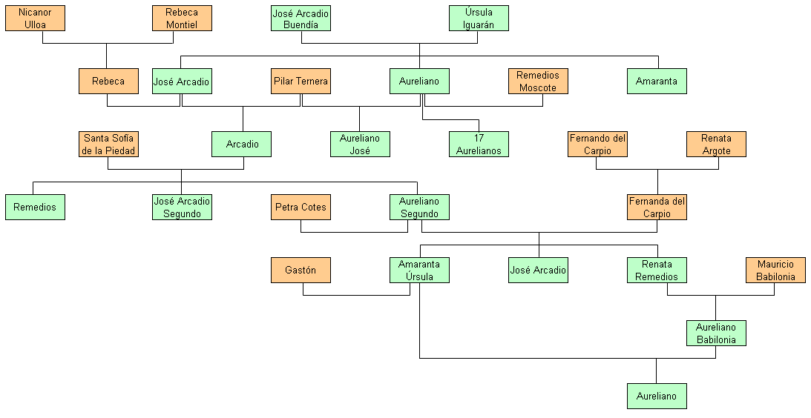

Le récit d'un siècle dans un village, Macondo, depuis sa fondation, en suivant la famille Buendia. Le fondateur, Jose Arcadio Buendia, est marié avec sa cousine Ursula, et ils ont peur que leur enfant ait une queue de cochon.
Sur sept générations, les personnages portent toujours les mêmes noms (Aureliano, Aureliano Segundo, Arcadio, Jose Arcadio, Jose Arcadio Segundo...)

Arbre généalogique des personnages
Ce n'est pas une grande épopée avec un grand but, mais plutôt la vie qui se répète de façon cyclique au travers des personnages, sans que le lecteur soit ému par les difficultés des personnages (la guerre civile à laquelle participe le colonel Aureliano Buendia, les quatre années de pluie). Des passages presque fantastiques (la lévitation d'un prêtre, Remedios une femme qui monte au ciel, les prophéties de Melquiades sur les cent ans de la famille Buendia, la pluie, Rebeca qui mange de la terre...)
C'est après un meurtre que Jose Arcadio Buendia fonde la ville. Sa femme Ursula reste vivante presque jusqu'à la fin de l'histoire. Des incestes, notamment le dernier, entre Aureliano Babilonia et Amaranta Ursula (sa tante), de qui nait Aureliano, avec une queue de cochon, qui sera dévoré par les fourmis.
Uno no es de ninguna parte mientras no tenga un muerto bajo la tierra.
Estaban ligados hasta la muerte por un vinculo màs solido que el amor: un comùn remordimiento de conciencia. Eran primos entre si.
Ursula y Jose Arcadio Buendia
Habià estado en la muerte, en efecto, pero habia regresado porque no pudo soportar la soledad.
Cuando nacio el hijo de Aureliano y Pilar Ternera y fue llevado a la casa y bautizado en ceremonia intima con el nombre de Aureliano José, Remedios decidio que fuera considerado como su hijo mayor.
Rebeca volvio a comer tierra.
la fiebre utilitaria de Ursula, de los delirios de José Arcadio Buendia, del hermetismo de Aureliano, de la rivalidad mortal entre Amaranta y Rebeca.
En realidad, no le importaba la muerte sino la vida, y por eso la sensacion que experimento cuando pronunciaron la sentencia no fue una sensacion de miedo sino de nostalgia.
Cayeron toda la noche sobre el pueblo en una tormenta silenciosa.
Despues de la muerte de José Arcadio Buendia
Hizo entonces un ultimo esfuerzo para buscar en su corazon el sitio donde se le habian podrido los afectos, y no pudo encontrarlo.
El coronel Aureliano
El secreto de une buena vejez no es otra cosa que un pacto honrado con la soledad.
Con la temeridad atroz con que José Arcadio Buendia atraveso la sierra para fundar a Macondo, con el orgullo ciego con que el coronel Aureliano Buendia promovio sus guerras inùtiles, con la tenacidad insensata con que Ursula aseguro la supervivencia de la estirpe, asi busco Aureliano Segundo a Fernanda, sin un solo instante de desaliento.
Digale - sonrio el coronel - que uno no se muere cuando debe, sino cuando puede.
Al cabo de algùun tiempo descubrio que cada miembro de la familia repetia todos lors dias, sin darse cuenta, los mismos recorridos, los mismos actos, y que casi repetia las mismas palabras a la misma hora.
La bùsqueda de las cosas perdidas està entorpecida por los hàbitos rutinarios, y es por eso que cuesta tanto trabajo encontrarlas.
Llovio cuatro anos, once meses y dos dias.
Al decirlo, tuvo conciencia de estar danda la misma replica que recibio del coronel Aureliano Buendia en su celda de sentenciado, y una vez màs se estremecio con la comprobacion de que el tiempo no pasaba, como ella lo acababa de admitir, sino que daba vueltas en redondo.
El mundo habrà acabado de joderse - dijo entonces - el dia en que los hombres viajen en priera clase y la literatura en el vagon de carga.
Que en cualquier lugar en que estuvieran recordaran siempre que el pasado era mentira, que la memoria no tenia caminos de regreso, que toda primavera antigua era irrecuperable, y que el amor màs destinado y tenaz era de todos modos una verdad efimera.
Era el ùnico en un siglo que habia sido engendrado con amor.
Tenia algo màs que el resto de los hombres, y se inclinaron para examinarlo. Era una cola de cerdo.
Porque las estirpes condenadas a cien anos de soledad no tenian una segunda oportunidad sobre la tierra.
2020-06 : Un peu dur à lire en espagnol... Mais histoire puissante, on est pris dans le cycle, dans l'étrangeté de ces phénomènes qui se répètent, pris par ces personnages un peu fous, omnubilés, choqué par l'inceste qui frappe comme une malediction.
Retour à l'accueil des fiches de lecture
Retour à l'accueil général